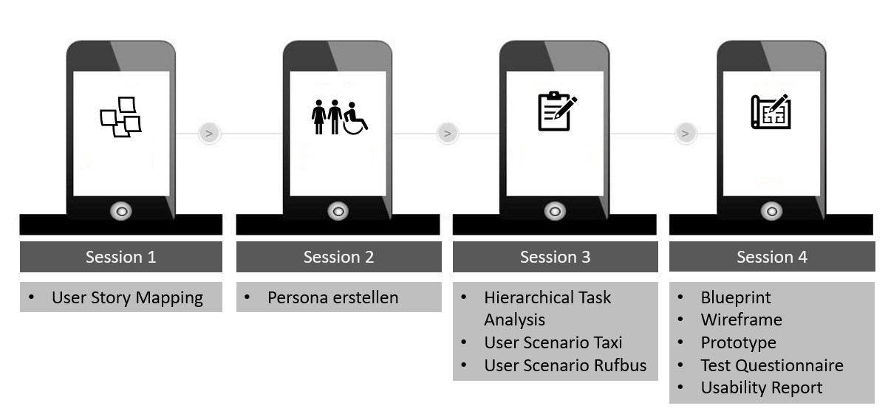
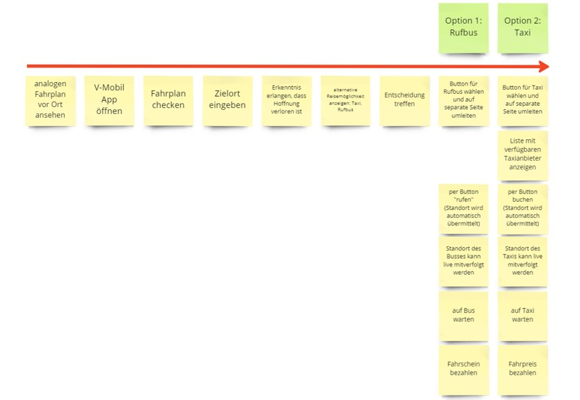
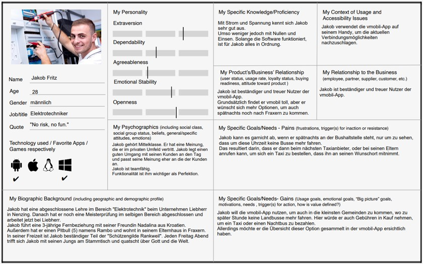

Projekt Information
- Produkt: V-Mobil App Erweiterung
- Lehrversanstaltung: User Centered Design
- Semester: 1. Semester
- Umsetzung: Figma, Miro, draw.io, Paperprototyping
Projektbeschreibung im Detail
Bereits im ersten Semester durfte ich in der Lehrveranstaltung „User Centered Design“ erste Erfahrungen bezüglich UX/UI Design sammeln. Unsere Aufgabe bestand darin, zusammen im Team, die V-Mobil App zu erweitern. Der Benutzer soll mit der Erweiterung die Möglichkeit haben, problemlos einen Rufbus oder ein Taxi zu sich zu bestellen. Die Erweiterung erfolgte in vier Sessions und ich durfte den Rufbus übernehmen.
Die Planung
1. Session: User Story Mapping
2. Session: Proto-Persona & Zielgruppenanalyse
3. Session: Task Analysis & User Scenarios
Es ist Samstag, der 13. November und Jakobs Sandkastenfreund namens Michael hat Geburtstag. Er wird 28 und möchte seinen Geburtstag gemeinsam mit Freunden um 17: 00 in der „Hirschabar“ in Weiler feiern. Jakob ist eingeladen. Er muss das Haus früher verlassen, da er noch ein kleines Geschenk für Michael besorgen muss. Das „Kriasidorf“ Fraxern ist bekannt für seine großen schwarzen Kirschen, also besorgt er für Michael noch schnell einen guten Kirschwein vom Peter Hof. Die Hinfahrt zur „Hirschabar“ ist leicht. Jakob hat in der cleVVVer Mobil App eine passende Busverbindung herausgesucht, sodass er pünktlich in der Bar erscheint. Der Peter Hof ist ungefähr 12 Minuten von der Bushaltestelle „Schufla“ entfernt, wo er auch einsteigen muss. Er muss bei der Haltestelle „Weiler Gemeindeamt“ aussteigen und ist weniger als in einer Minute am Zielort. Jakob beschließt etwas früher die Feier zu verlassen, da er am nächsten Tag mit den Hühnern aufstehen muss. Also verabschiedet er sich von seinen Freunden schon um 19:30. Obwohl Jakob leicht betrunken ist, schafft er es mit wackeligem Gang zur Bushaltestelle. Er sieht sich den analogen Fahrplan an und stellt fest, dass kein „normaler“ Bus mehr nach Fraxern fährt. Zum Glück hat Jakob die cleVVVer Mobil App auf seinem Handy, welche er trotz Berauschtheit ohne Probleme bedienen kann. Seinen momentanen Standort braucht Jakob nicht einzugeben, da sein GPS glücklicherweise aktiviert ist. Er tippt sein Zielort ein und wählt Abfahrtszeit „jetzt“ aus. Die App weiß natürlich, dass um diese Zeit kein „normaler“ Bus mehr fährt und zeigt ihm den Button für den Rufbus an, die ihn auf eine separate Seite umleitet. Mit dem Button bestellt er den Rufbus zu sich. Jakobs Standort wird automatisch an den Bus übermittelt. Gleichzeitig kann auch er den Standort des Rufbusses live mitverfolgen. Nun muss er noch auf den Bus warten. Bezahlen kann er die Kosten für die Fahrt, die 5€ betragen, entweder mit der App oder Bar im Bus. Jakob beschließt bar zu bezahlen. Ohne den Rufbus hätte Jakob in der Novemberkälte über eine Stunde laufen müssen, mit dem Rufbus ist er in 6 Minuten vor seiner Haustür.
4. Session: Blueprint, Wireframe & Prototyping
Paperprototyping - Usability Report
Welche Änderungen wurden vorgenommen? Warum?
Ab einer gewissen Uhrzeit fahren in manchen Ortschaften keine öffentlichen Verkehrsmittel mehr – vor allem am Wochenende. Deshalb haben wir für die cleVVVer-Mobil App zwei neue Optionen kreiert, die es für den User einfacher machen, schnell und unkompliziert zum Zielort zu gelangen – und zwar den Rufbus und das Taxi mit den entsprechenden Symbolen.
Wie funktioniert es?
Nachdem man die präferierte Haltestellen A & B und die gewünschte Abfahrts-/Ankunftszeit angegeben und abgefragt hat, kommt man zu den Verbindungen. Sollte es keine Verbindung geben, klickt man auf „mehr“ (mit drei Punkten). Dort gibt es die Möglichkeit per Button ein Rufbus oder ein Taxi zu bestellen. Entscheidet man sich für den Rufbus, wird man auf eine neue Seite weitergeleitet, wo man nur für eine Zahlungsart entscheiden muss. Nimmt man die Option Taxi, wird man auf eine neue Seite weitergeleitet, wo man Daten wie Vor -und Nachname, Telefonnummer, Haltestelle, Personenanzahl usw. angeben muss. Die Zahlung erfolgt im Taxi.
Ergebnisse der Probanden
Laut den Testpersonen war die Bedienung der App einfach – uns war wichtig, dass die Aufgabe und die Benutzung der App unkompliziert sind. Eine Testperson hatte schon Erfahrung mit der App, die andere war etwas jünger und hat sie zum ersten Mal verwendet. Trotz dieser Differenz haben beide Probanden keine Probleme bei der Nutzung der App gehabt, sowohl beim Taxi als auch beim Rufbus.
Was sich die Testpersonen jedoch gewünscht hätten:
• Bei Verspätungen → Benachrichtigung erhalten
• Anzeige der ungefähren Ankunftszeit des Busses
Diesen Wünschen werden wir entgegenkommen, da die Meinung unserer User von Bedeutung ist und, weil wir auf Benutzerfreundlichkeit großen Wert legen.